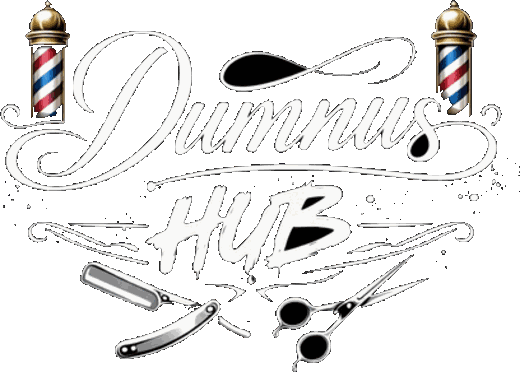
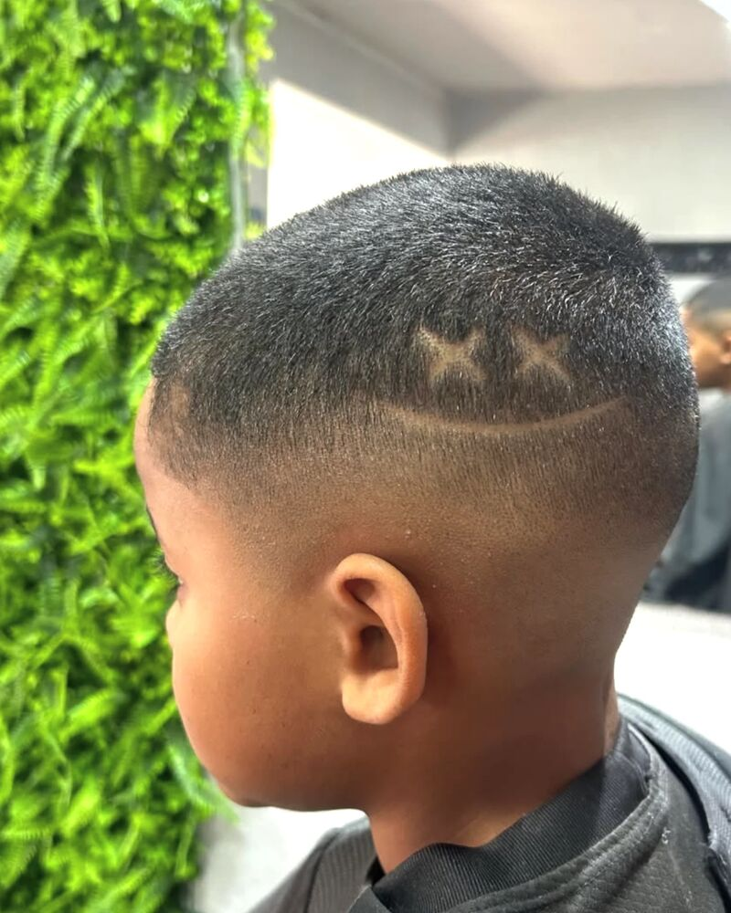
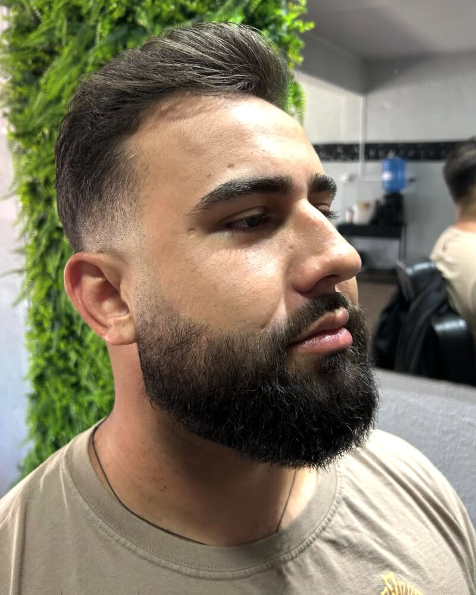
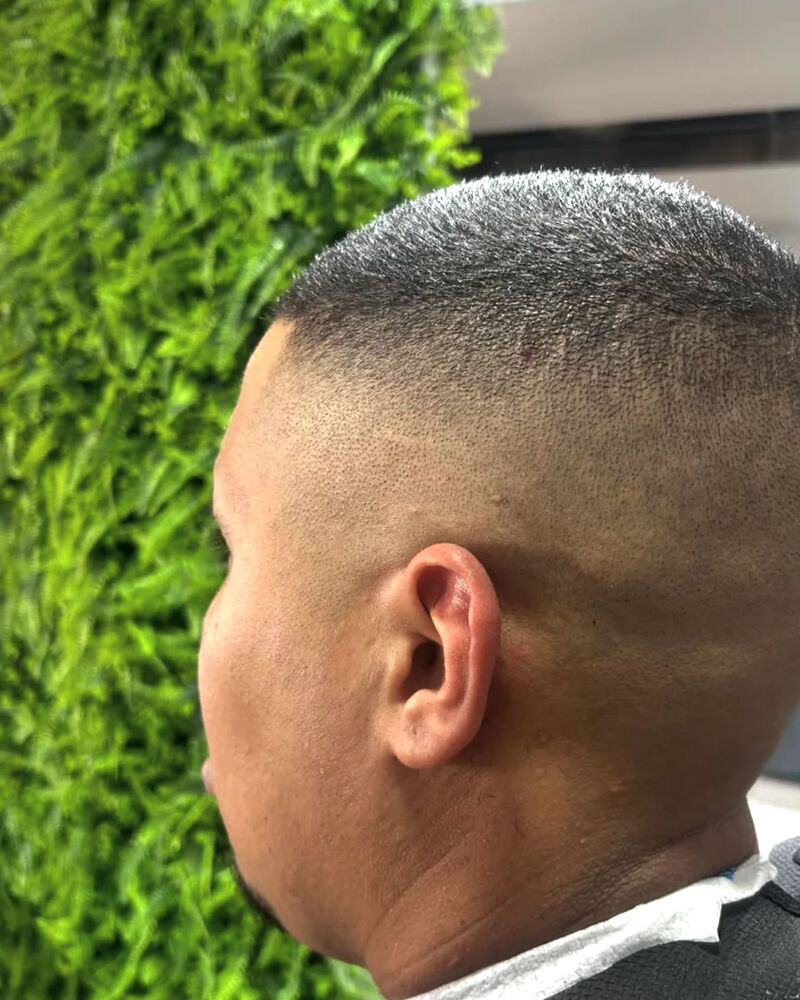
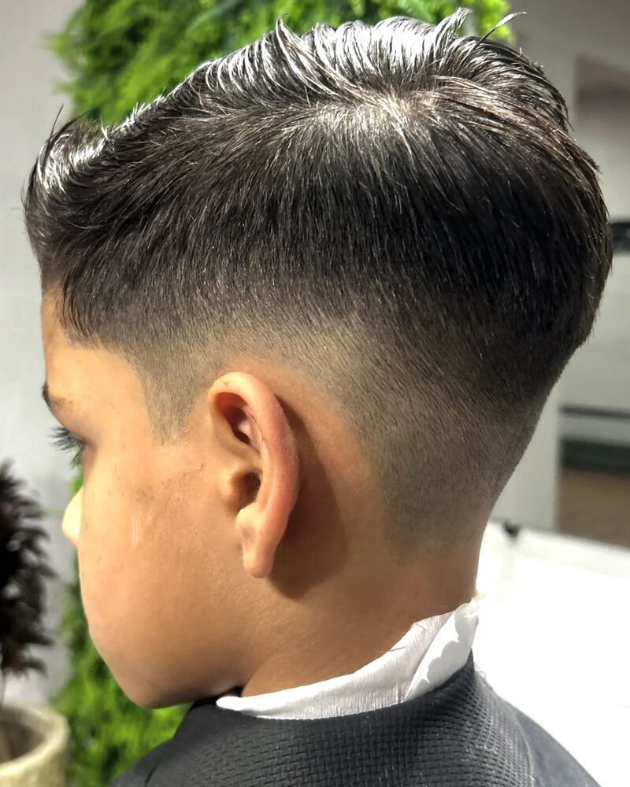

data-draft="on" da tag <html> e este aviso some.

Corte e degradê feitos no detalhe, barba na navalha com toalha quente e o acabamento conferido no espelho antes de você levantar da cadeira. Escolha o seu horário pelo WhatsApp em menos de 1 minuto.
Abre direto na conversa. Você manda o dia e a hora, a gente confirma. Sem cadastro, sem baixar app.
Se você já passou por isso
Isso não é frescura. É o seu tempo e é a sua cara — as duas coisas que você carrega todo dia e que ninguém devolve depois.
O jeito Dumnus Hub
A gente trabalha com hora marcada e um cliente por vez. Sem fila, sem pressa, sem dividir a atenção. O cuidado é o da barbearia tradicional — navalha na mão, toalha quente, contorno feito no detalhe. O resultado é o degradê e a barba desenhada que você vê nas fotos aqui embaixo.
Dois minutos de conversa antes de começar: o que você quer, o que já deu errado antes e o que funciona no seu tipo de cabelo. É aqui que a maioria dos cortes ruins é evitada.
Nuca, costeleta, contorno e desenho da barba são revisados com você olhando. Se tiver algo pra ajustar, ajusta na hora — não quando você já está na rua.
O que isso muda pra você
Com hora marcada, você sabe a que horas entra e a que horas sai. Dá pra encaixar entre o trabalho e o resto do dia.
Você para de perder meio sábado sentado esperando.
A conversa antes e a conferência no espelho depois existem exatamente pra eliminar a surpresa ruim.
Você se olha no espelho e gosta — hoje e na foto de amanhã.
Degradê bem puxado e contorno feito na navalha crescem de forma mais limpa do que um acabamento feito às pressas.
Mais dias com o visual em pé entre uma visita e outra.
Toalha quente pra abrir a pele, navalha pro contorno e simetria conferida nos dois lados do rosto.
Barba com forma definida, não só “aparada”.
Um cliente por vez significa que o barbeiro está olhando pro seu cabelo, e não pra quem está esperando na porta.
Aquele tempo do dia que é só seu, sem ninguém te apressando.
É pelo WhatsApp, na conversa que você já usa o dia todo. Sem cadastro, sem senha, sem instalar nada.
Você resolve agora, do jeito mais fácil, e esquece.
Você escolhe o dia e a hora. Leva menos de 1 minuto.
Simples assim
Trabalho feito aqui
Degradê, barba desenhada e detalhe na navalha. Todos os cortes abaixo foram feitos na cadeira da Dumnus Hub.




ESPAÇO RESERVADO PARA DEPOIMENTOS REAIS — não escrevi nenhum porque você ainda não tem avaliações confirmadas. Assim que tiver (Google, Instagram ou print do WhatsApp), me mande que eu encaixo aqui. Esta é a prova social que mais pesa para barbearia, depois das fotos.
Quem vai cortar
PREENCHA AQUI: nome do barbeiro responsável, há quantos anos corta, onde se formou ou com quem aprendeu, e uma frase sobre o jeito dele de trabalhar. Eu não escrevi nada inventado — este bloco só vai pro ar com informação verdadeira sua.
Serviços e valores
Formas de pagamento: PREENCHA (dinheiro, Pix, débito, crédito...)
Dúvida no valor? Pergunte na conversa antes de fechar o horário.
O que costuma travar
Por isso a conversa vem antes da tesoura e a conferência vem antes de você levantar. Se tiver algo fora do lugar, fala ali mesmo e a gente acerta na hora — com você na cadeira, não depois que já foi embora.
Cliente novo entra do mesmo jeito: hora marcada e um por vez. As fotos aqui em cima são de trabalho feito nesta cadeira — olhe o acabamento da nuca e do contorno antes de decidir.
Mande no WhatsApp o dia e a faixa de horário que funcionam pra você. A gente responde com o que está livre nesse intervalo — incluindo PREENCHA: sábados / horário estendido, se houver.
O agendamento existe justamente pra isso não acontecer. É um cliente por vez, com tempo reservado para o seu serviço.
Os valores estão na tabela aqui em cima, antes de você agendar. O que você viu é o que paga — e qualquer serviço extra é combinado com você antes de ser feito.
Corte, degradê e barba na navalha com toalha quente. O combo corte + barba é o serviço mais pedido e resolve tudo numa visita só.
Perguntas frequentes
O atendimento é por hora marcada, justamente pra ninguém ficar esperando. Chame no WhatsApp e já saia com o seu horário confirmado.
PREENCHA: tempo médio do corte e tempo médio do combo corte + barba. (Não coloquei número porque não sei o seu — e número errado aqui gera atraso e cliente irritado.)
PREENCHA: endereço completo, ponto de referência, se tem estacionamento e os dias e horários de funcionamento.
PREENCHA: dinheiro, Pix, cartão de débito, crédito, parcelamento.
PREENCHA: sim ou não, a partir de que idade e se o valor é diferente. (Uma das fotos da página é de corte infantil, então vale deixar isso claro aqui.)
Fazemos. Degradê na pele, contorno na navalha e desenho são parte do trabalho — as fotos aqui na página são exemplos reais feitos na cadeira.
Basta avisar no mesmo WhatsApp em que você agendou, de preferência com antecedência, e a gente remarca pro próximo horário que servir pra você.
Faz. A barba na navalha com toalha quente é um serviço avulso e tem horário próprio na agenda.
Último passo
Abre direto no WhatsApp com a mensagem pronta. Você só envia e escolhe o horário.